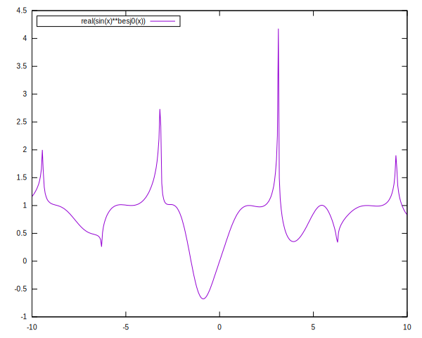

Multiconversor de archivos.
Una auténtica navaja suiza. Sorprende por su potencia y versatilidad. Código abierto.
- creado por el profesor de filosofía John MacFarlane
- con una amplia comunidad de usuarios y desarrolladores.
- fácilmente extensible con filtros que aumentan su potencia.
- una extensa documentación la encontrará en Pandoc website.
Una grafo en vez de mil palabras.
- Las conversiones más utilizadas:
- markdown a LATEX o pdf.
- markdown a html.
- markdown a docx.
- markdown a epub.
- pero no son las únicas…
Markdowwn a Html
Es más fácil escribir markdown que html (o LATEX ).
- es un hecho comprobable.
- si no vas a dedicarte a la programación web no te compensa
el esfuerzo de aprender html y tecnologías asociadas. - en cambio aprender markdown es bastante fácil
- escribes texto plano siguiendo una serie de pautas o convenciones.
- Pandoc se encargará de convertir tus textos markdown(texto plano)
a html(página web) utilizando una plantilla. - El proceso se puede automatizar de tal manera que
puedas tener una web completa con unos cuantos markdown.
Se conocen como generadores de sitios estáticos.
Extensiones.
Hay infinidad de filtros de Pandoc que permiten ampliar las capacidades de markdown. En esta presentación usamos dos filtros de Pandoc a modo de ejemplo:
Pandoc static KATEX que nos permite escribir cualquier fórmula matemática; por ejemplo, eiπ+1=0
Pandoc Imagine que nos permite convertir bloques de código en imágenes; por ejemplo, la siguiente imagen está generada por el filtro usando gnuplot
